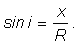

Fig. 1.
 Unghiurile faţă de normala la suprafaţa plană de separaţie dintre aer şi sticlă.
Unghiurile faţă de normala la suprafaţa plană de separaţie dintre aer şi sticlă.Uneori este mai convenabil să precizezi o direcţie indicând unghiul faţă de o direcţie de referinţă.
În măsurătorile efectuate, direcţia de referinţă este de−a lungul diametrului y şi este perpendiculară (normală) pe suprafaţa plană a semicilindrului de sticlă.
În figura 1 au fost notate unghiurile faţă de normala la suprafaţă, formate de razele incidentă, reflectată şi refractată.
Unghiurile faţă de normala la suprafaţa plană de separaţie dintre aer şi sticlă.
Numim unghi de incidenţă unghiul dintre raza incidentă şi normala la suprafaţa de separaţie dintre cele două medii.
Unghiul i din figura 1 este unghiul de incidenţă.
 Provocarea 1
Provocarea 1
Care te aştepţi să fie relaţia dintre unghiul de incidenţă i din figura 1 şi distanţa corespunzătoare x?
Triunghiul SII' este dreptunghic în I', iar SI este chiar raza cercului (R = 10 cm).
Unghiul i este un unghi ascuţit al triunghiului în care x este lungimea catetei opuse, iar raza R a cercului este lungimea ipotenuzei.
Astfel, valoarea funcţiei sinus a unghiului de incidenţă este:

Numim unghi de reflexie unghiul dintre raza reflectată şi normala la suprafaţa de separaţie dintre două medii.
Unghiul r1 din figura 1 este unghiul de reflexie.
Numim unghi de refracţie unghiul dintre raza refractată şi normala la suprafaţa de separaţie dintre două medii.
Unghiul r2 din figura 1 este unghiul de refracţie.
Provocarea 2
Care te aştepţi să fie expresiile de calcul pentru valorile funcţiilor sinus ale unghiurilor de reflexie şi de refracţie?
 Activitatea experimentală 1
Activitatea experimentală 1
Transcrie pe caiet şi completează tabelul 1, pentru întreg setul de date colectate.
Tabelul 1. Valorile funcţiilor sinus ale unghiurilor de incidentă, reflexie şi refracţie.
| sin i | sin r1 | sin r2 |
Dispui acum de un set de date prelucrate, referitoare la reflexia şi refracţia luminii pe suprafaţa plană a semicilindrului.
Există oare reguli simple din care să rezulte datele din tabelul 1?
Dacă ar fi aşa şi ai găsi aceste reguli, ai atinge un nivel mai profund de înţelegere a luminii şi vei şti dinainte care va fi drumul urmat de lumină, oricare ar fi unghiul de incidenţă!